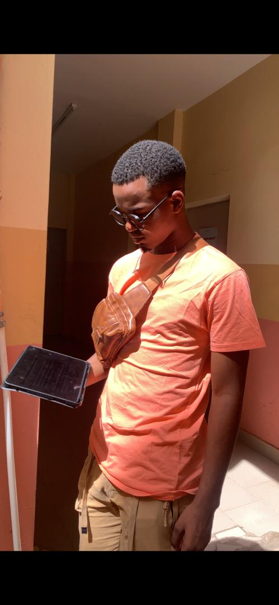
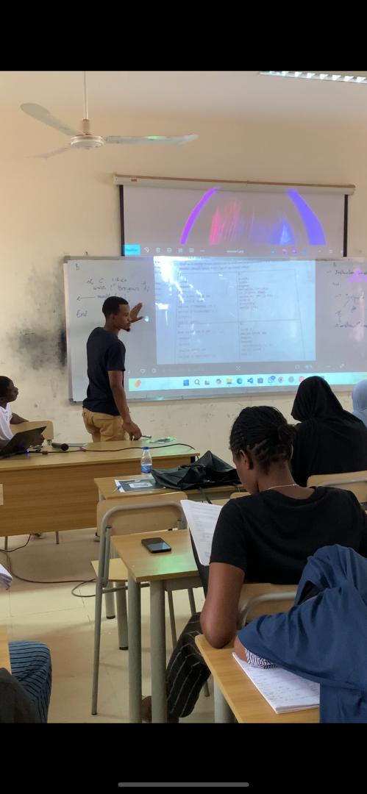
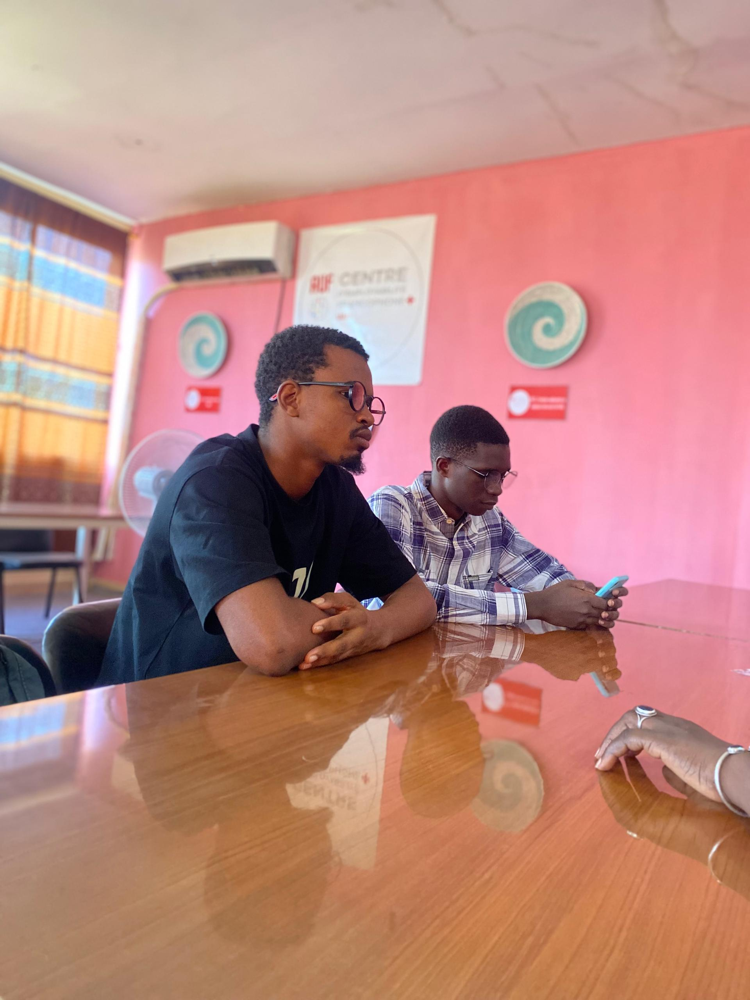
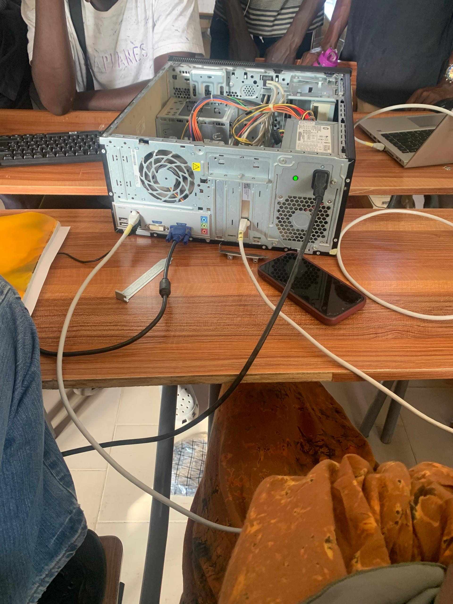
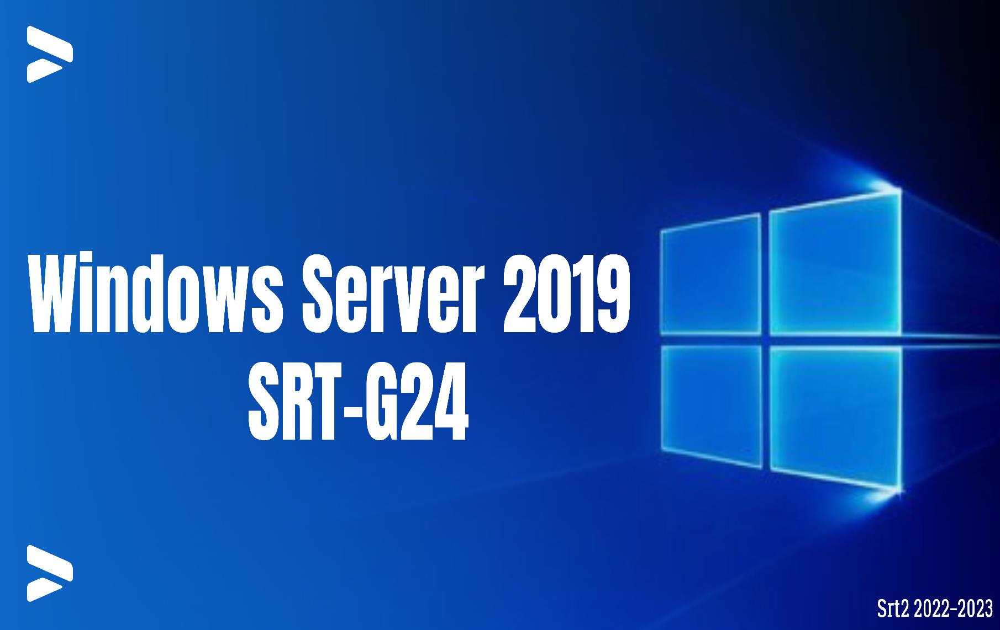
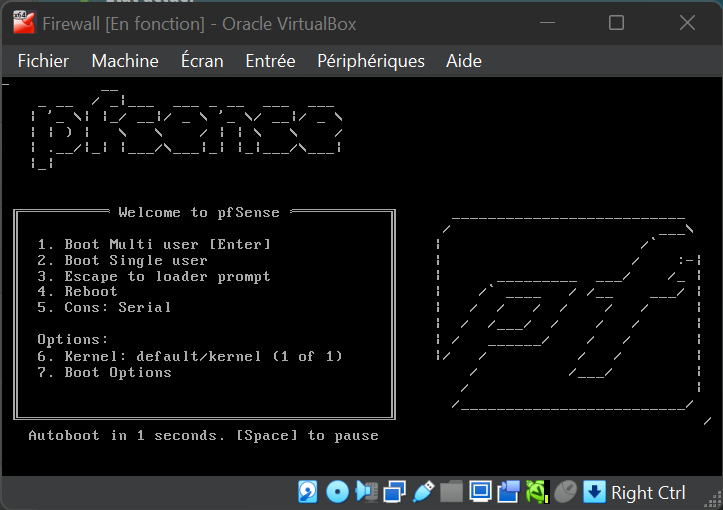

Passionné par la sécurité, l’optimisation réseau et l’innovation.
#Cisco
#Linux
#Cloud

Leadership et gestion d’équipe en tant que président (et ancien vice-président) de l’Amicale des Étudiants de Saly à l’UADB. Organisation d’activités, pilotage d’initiatives et accompagnement des étudiants.

Animation de séances de tutorat pour accompagner des étudiants en réseaux et en programmation (Pascal, C, etc.), développement de l’esprit d’entraide et de pédagogie.

Organisation de formations et d’ateliers techniques en partenariat avec des entreprises, favorisant l’accès à des stages et le développement professionnel des membres.

Configuration de règles de filtrage pour sécuriser un serveur Linux contre les attaques DDOS.

TPs sur l'installation, la configuration et la gestion d'un environnement Windows Server (AD, DNS, DHCP, IIS...)

Déploiement d’un réseau sécurisé avec pfSense, DMZ, VPN, Snort et tests d’attaques.
Système innovant de gestion et de distribution de l’eau potable avec paiement RFID et interface web.
Projet de Master I SISR : gestion d'infrastructure, sécurité et optimisation des réseaux.
Parcourez mes mini-projets en classe via un défilement horizontal. Chaque carte bascule au survol pour afficher le résumé et le lien de téléchargement.
Étude des conteneurs, distinction hyperviseurs vs conteneurs, et découverte des composants Docker.
Télécharger le rapportTravail sur GitHub Codespaces et OpenShift pour expérimenter le déploiement PaaS.
Télécharger le rapportSimulations Simulink/Matlab pour les modulations ASK, FSK, PSK et QAM.
Télécharger le rapportLaboratoire VirtualBox basé sur un hôte Windows 11 et un invité Ubuntu Server 22.04 LTS.
Télécharger le rapportCréation d’une application Python/Flask et déploiement dans un conteneur Docker.
Télécharger le rapportPratique de Git : commits, branches, résolution de conflits et intégration GitHub.
Télécharger le rapportAnalyse GMSK avec WinIQSIM pour comprendre le standard GSM et ses propriétés spectrales.
Télécharger le rapportChaîne OFDM MATLAB/Simulink, BER en AWGN et Rayleigh, et analyse des performances.
Télécharger le rapportProjet d’architecture virtualisée entreprise avec IaC, sécurité DMZ/LAN et déploiement CI/CD.
Télécharger le rapport2026 - Présent
Université Alioune Diop de Bambey
2025
Université Alioune Diop de Bambey
2021
Lycée de Mbour
2017
CEM Saly Velingara
Formation Netacad sur la sécurité des réseaux, protocoles et bonnes pratiques.
Certification Alphorme sur les fondamentaux des réseaux informatiques.